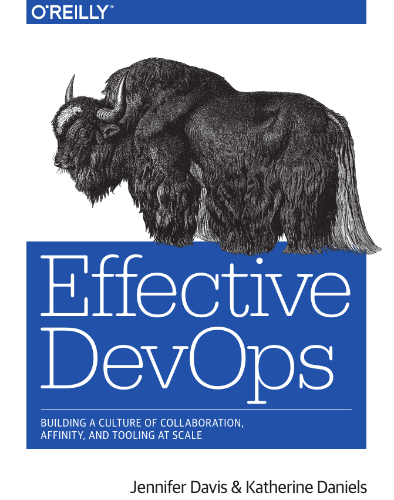
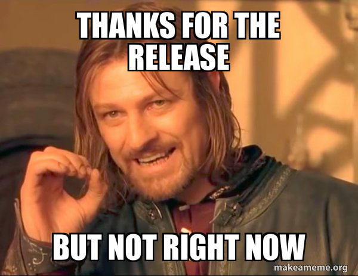

devops
April 26, 2019
Plan
- Hallvard provides us with latest news before 9:00
- Introduction. History of devops 9:00
- CI Tools 10:00
- CircleCI part1 10:00
- Workshop 10:45
- Dinner 12:00
- CircleCI part2 12:30
- Workshop 13:00
- DevSecOps 14:30
- Workshop 14:45
- Conclusion 15:30
Why are we here today?
- See each other
- Listen
- Talk
- Do exercises
- Take something into your projects
- Check notifications on your phone
Failure sucks but instructs. Bob Sutton
What is devops?
- shared, clearly defined goals
- ongoing communication
- dynamic adjustment and repairs of understanding

Shared understanding
- Implementing a new feature that increases the value to customers
- Maintaining safety and trust in communication with each other
History of devops
Developer as operator at World War II
- Jean Bartik and other 5 women learned to program ENIAC with no documentation and no plans
- Programming ENIAC and its 18,000 vacuum tubes meant setting dials and changing out cable connections across 40 control panels.
- The hardware engineers would come and proclaim
“It’s not the machine; it’s the operators.”
Advent of software engineering for moon landing
Margaret Hamilton while working at NASA is credited with coining the term sofware engineering
Software engineering concerns
- debugging all individual components
- testing individual components prior assembly
- integration testing
NATO Software Engineering conference 1968
Key problems with software engineering:
- defining and measuring success
- building complex systems requiring large investments and unknown feasibility
- producing systems on schedule and to spec
- putting economic pressures on manufacturers to build specific products
Advent of proprietary software and standardization
- Until 1964 it was common to build computers to customer requirements
- Software and hardware were not standardized or interchangeable
- In 1964 IBM announces mainframe System/360
- In 1969 IBM again impacted the industry by decoupling software and hardware
- This changed how software was viewed
- It suddenly acquired significant monetary value of itself and was not provided openly
Age of network
- Usenet was started in 1979
- facilitated sharing of knowledge
- talking about solving problems outside of companies was not done in fear of losing competitive advantage
- cultural siloization grew in complexity
- Institutional Tower of Babel
- high level programming languages meant programmers moved farther away from hardware
Beginnings of global community via interconnected networks
- user groups
- One of the first: DECUS Digital Equipment Computer User’s Society
- Contrary to focus on knowledge sharing, there was a great deal of secrecy regarding their practices
Age of applications and the Web
- 1995 Apache HTTP server is released
- marks the beginning of a trend toward open source solutions
- Linux, Apache, MySQL, PHP
- The Bastard Operator From Hell
- ops say no since “it’s critical to preserve stability”
- devs say “it’s critical to get these changes out”
Growth of Software Development Methodologies
- 2001 Extreme programming
- Agile development
- 2004 Agile Manifesto
Open Source Software, Proprietary Services
- web software commodization
- 2006 Amazon launches EC2 & S3
- virtualized compute & storage resources via proprietary service
- ease of use
- low entry cost
- flexibility
- 2006 Twitter
Agile Infrastructure at Agile 2008 conference
- ‘Agile operaitons and Infrastucture’ Patrick Debois
- ‘Agile Infrastructure’ Andrew Clay Shafer, but did not attend himself
- Patrick contacted him
- 2009 O’Reilly Velocity conference, Allspaw & Hammond ‘10+ deploys per day’
Beginning of devopsdays
October 2009 Patrick Debois after he did not manage to visit Velocity conference organises first devopsdays conference
I was kinda giving up, maybe the idea was too crazy: developers and ops working together
Current state of devops
Companies doing devops are outperforming those who aren’t
showing numerically that an emphasis on having individuals work together effectively is better for business than silos full of engineers who do not play well with others.
devops organizations
- deploy more frequently
- have fewer failures
- recover faster
- have happier employees
Historical links
Allspaw, Hammond, “10+ Deploys Per Day at Fickr”

The (Short) History of DevOps

dev2ops.org
From
“Please go faster”

To
“Please slow down”
